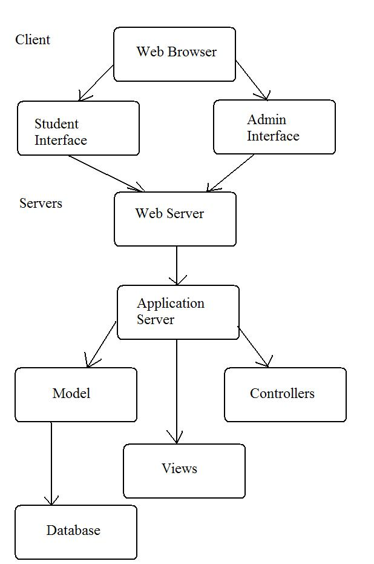
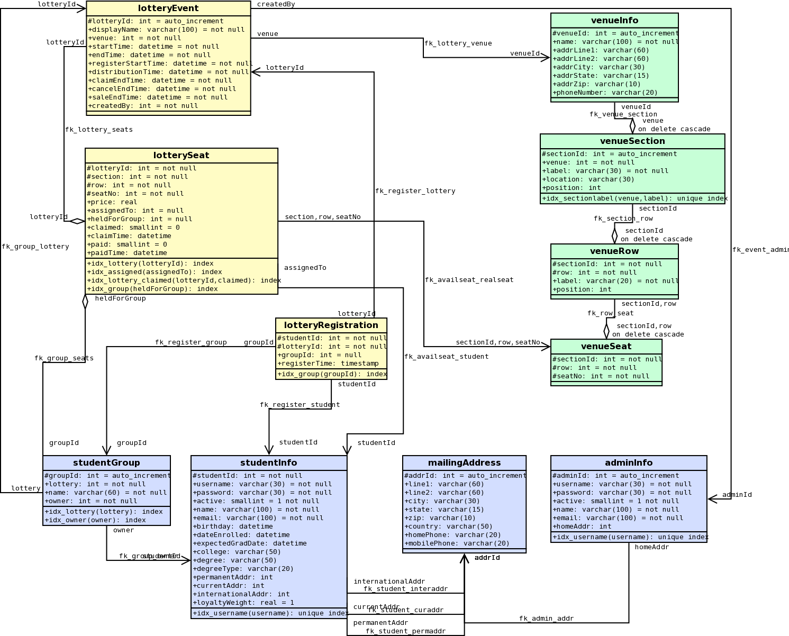

High Level Design
Architecture Diagram
The system is split into several layers, each using a different architecture plan. The top-level, which the user interacts with directly, is a client-server model, where the client is a user's Web browser. Users can access either the student interface or administrator interface. Users use the same browser for each, but the two interfaces share no screens.
The user's browsers interact directly with a Web server, which processes their requests and handles serving static files such as images and stylesheets. Other requests for dynamic content are forwarded to an application server, which runs the Ticket Lottery program. The program implements a Model-View-Controller architecture, where the Model interface connects to a database server that acts as a backing store.
Domain Model
{kind=link}
Click to see larger image
The domain model is split into three main components: Information about users, both students and administrators; information about venues, including their seating plans; and information about lottery events. The events draw heavily on the other two components, as ticket availability is contingent on the seats existing in the venue, and the tickets are of little use if they aren't assigned to students.